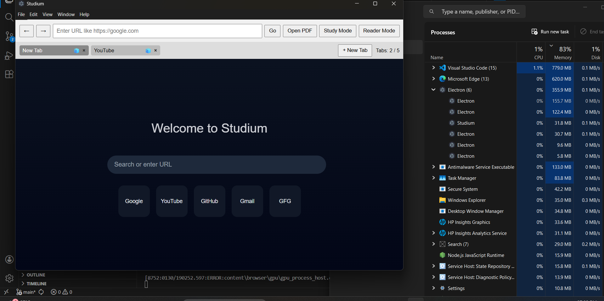
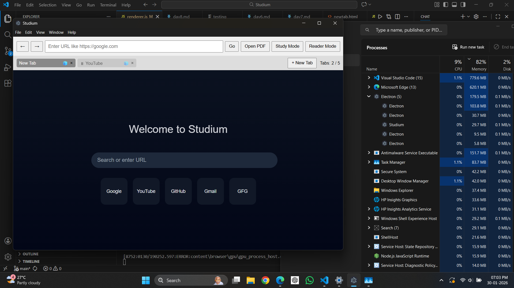
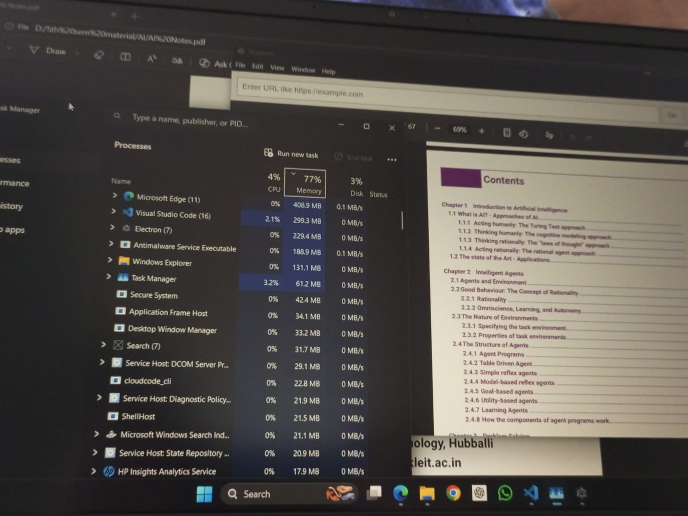

Local PDF Viewer
Open and render PDFs natively inside Electron with optimized memory management. No cloud upload, no external viewer needed.
- Drag & drop PDF files
- Zoom, rotate, thumbnail nav
- Memory released on close
A lightweight desktop browser
Studium is a lightweight browser designed for PDF-heavy academic workflows. Predictable memory usage, intentional tab limits, and distraction-free reading in one clean desktop app.

Real screenshot from Studium test build — PDF viewer with Study Mode active
Features
Each feature exists because a real student problem demanded it.
Open and render PDFs natively inside Electron with optimized memory management. No cloud upload, no external viewer needed.
Toggle distraction-free layout — hides all non-essential UI elements, leaving only your content.
Strips ads, sidebars, and visual noise from articles and documentation pages for clean reading.
Hard cap of 5 tabs prevents RAM overload and enforces intentional browsing habits.
Recover your study context when needed — tabs, scroll positions, and PDF locations.
Fast controls for tab actions, modes, navigation, and opening PDFs without touching the mouse.
Vs Mainstream Browsers
Mainstream browsers are built for everything. Studium is built for one thing — studying.
| Capability | Studium | Edge | Chrome |
|---|---|---|---|
| Idle memory | ~210–230 MB | ~380–400 MB | ~450–500 MB |
| PDF + mixed tabs | ~300–320 MB | ~800+ MB | ~900+ MB |
| Startup time | ~2–3 sec | ~3–5 sec | ~4–6 sec |
| Tab limit | 5 (hard cap) | Unlimited | Unlimited |
| Study mode | ✓ Native | Extensions only | Extensions only |
| Reader mode | ✓ Built-in | ✓ Immersive Reader | ✓ Reading mode |
| PDF memory cleanup | ✓ On close | Leaks in background | Leaks in background |
| Telemetry | None | Extensive | Extensive |
| Installer size | ~104 MB | ~150+ MB | ~200+ MB |
* Measured on Windows 11 with identical PDF and web content. Your results may vary.
Performance Proof
~210–230 MB
Idle memory (Studium)
~380–400 MB
Idle memory (Edge)
~300–320 MB
PDF + tabs (Studium)
~800+ MB
PDF + tabs (Edge)
Idle memory comparison (lower is better)
Power User
Press F1 in-app anytime to see the full cheat sheet.
Screenshots


Questions
No. Studium is a focused tool for PDF-heavy study sessions. It lacks extensions, sync, dev tools, and many web platform features. Use it alongside your main browser.
The hard cap prevents accidental RAM overload and encourages intentional browsing. You can discard inactive tabs to make room. This is a feature, not a bug.
Currently Windows 10/11 only. The Electron build targets Windows (NSIS installer). macOS/Linux builds are on the roadmap but not yet released.
No. Studium has zero telemetry, no analytics, no auto-updates that phone home, and no account system. It runs entirely locally.
Not in v1.x — the 5-tab limit is hardcoded to enforce the design philosophy. Future versions may offer a "power user" override with warnings.
Zoom, rotation, thumbnail navigation, page jump, text selection, search within PDF, and keyboard navigation. Annotations and forms are not yet supported.
Requirements
Windows 10 (1909+) or Windows 11
x64 (64-bit) only
4 GB minimum (8 GB recommended for PDF workflows)
~150 MB for install + temp space for PDFs
Standard user (no admin required for install)
1366×768 minimum (1080p+ recommended)
Get Studium
Get Studium v1.0.1 for Windows. Optimized for PDF workflows and focused study sessions. No installer bloat, no background services, no telemetry.
Previous releases remain available for compatibility or rollback.
SHA-256 (v1.0.1): Pending — check GitHub Releases
Verify with PowerShell: Get-FileHash -Algorithm SHA256 Studium.Setup.1.0.1.exe